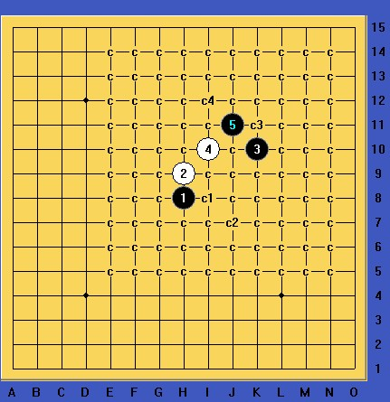

前段时间有人问这个变化，发出来共享下，有问题发图。

 外残月败4.rar
外残月败4.rar［此帖子已被 山城刀客 在 2013-12-15 12:24:28 编辑过］
［ 逆刃 于 2013-12-15 22:56:13 时奖励此帖[金币加 100 威望加1］
［ 偶尔出来逗逗你同学于 2013-12-16 17:19:15 时花20金币送鲜花一朵］
［ 平凡人生同学于 2013-12-31 8:26:52 时花20金币送鲜花一朵］
［ 我很低调同学于 2014-4-3 6:40:39 时花20金币送鲜花一朵］
怎么空白的 传不上去了？
发现搜狗浏览器打开爱网不能上传图片和棋谱，求专业人士解释！
［此帖子已被 山城刀客 在 2013-12-15 12:25:32 编辑过］
［ 山城刀客同学于 2013-12-17 21:37:29 时花20金币送鲜花一朵］
［ 山城刀客同学于 2013-12-17 21:37:29 时花20金币送鲜花一朵］
［ 山城刀客同学于 2013-12-17 21:37:29 时花20金币送鲜花一朵］
［ 山城刀客同学于 2013-12-17 21:37:29 时花20金币送鲜花一朵］
［ 山城刀客同学于 2013-12-17 21:37:29 时花20金币送鲜花一朵］
 厉害
厉害［此帖子已被 偶尔出来逗逗你 在 2013-12-17 10:05:12 编辑过］
［此帖子已被 偶尔出来逗逗你 在 2013-12-17 10:04:41 编辑过］
引用：
原文由 偶尔出来逗逗你 发表于 2013-12-17 10:02:42 :［此帖子已被 偶尔出来逗逗你 在 2013-12-17 10:04:41 编辑过］
残月，呵呵
刀客说一下几个弱4，我有个浏览器可以发图